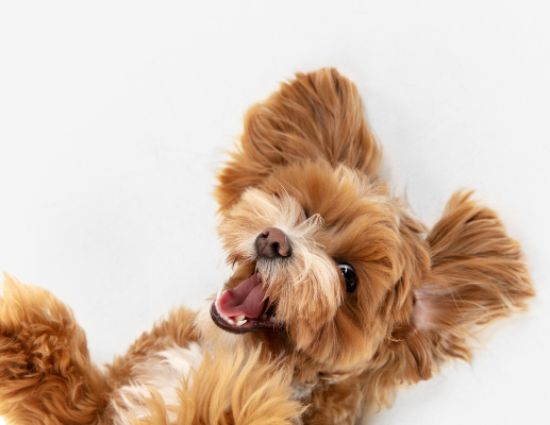
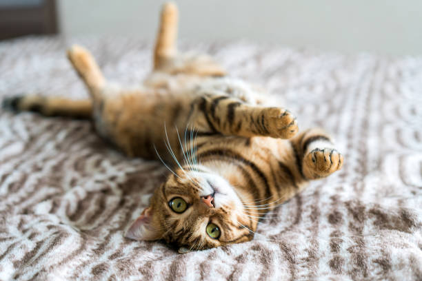

Nuestro centro de adopcion
Ayudalos a conseguir un hogar permanente y nosotros te ayudamos a conseguir un compañero de vida.Si quieres saber mas informacion haz click en la mascota que te gusta.

Reyna
Tiene aprox. 3 años, es muy juguetona y con mucha energia.

Fido
Tiene aprox. 7 años, es muy tranquilo
Loky
Tiene 5 años, necesita de mucha actividad fisica y aire libre
Fluffy
Tiene 4 meses, es muy curioso

Felix
Tiene 5 meses, es muy tranquilo

Rayitas
Tiene 1 año, es travieso